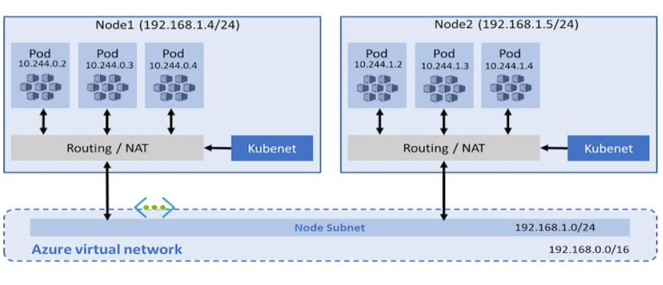
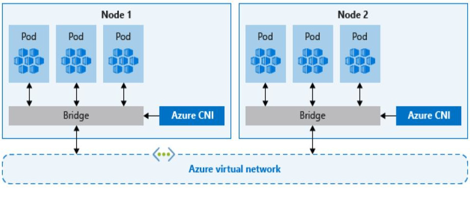

Deploy GoQuorum with Kubernetes¶
Use the reference implementations to install private networks using Kubernetes (K8s). Reference implementations are available using:
Familiarize yourself with the reference implementations and customize them for your requirements.
Quorum-Kubernetes¶
Quorum-Kubernetes is a repository containing Kubernetes manifests and Helm charts that you can customize and deploy on a local cluster or in the cloud.
Important
We recommend starting with the playground
directory and working through the example setups before moving to the
helm directory.
The helm directory contains charts for the various components, and each chart has a cluster map with features that
you can toggle.
cluster:
provider: local # choose from: local | aws | azure
cloudNativeServices: false # set to true to use Cloud Native Services (SecretsManager and IAM for AWS; KeyVault & Managed Identities for Azure)
Setting cluster.cloudNativeServices: true stores keys in AWS Secrets Manager or Azure Keyvault in lieu of Kubernetes
Secrets and also makes use of AWS IAM or Azure Managed Identities for the pods
Cloud support¶
The repository’s helm charts support on-premise and cloud providers such as AWS, Azure, GCP, and IBM.
You can configure the provider in the
values.yml file of
the respective charts by setting cluster.provider to local, aws, or azure. Note that if you use
GCP or IBM, set cluster.provider: local and set cluster.cloudNativeServices: false.
The repository also contains Azure ARM templates
and AWS eksctl templates to deploy the
required base infrastructure.
Limitations¶
When using multi-clusters, Kubernetes load balancers disallow TCP and UDP traffic on the same port, which inhibits discovery working natively for each pod. Use the following solutions to mitigate this limitation:
- Disallow discovery and use static nodes to allow only TCP traffic. This isn’t an issue for load balancers or exposing nodes publicly.
- If you need to use discovery, use something such as CNI which is supported by all major cloud providers, and the cloud templates already have CNI implemented.
CNI¶
With the traditional kubenet networking mode, nodes get an IP from the virtual network subnet.
Each node in turn uses NAT to configure the pods so that they reach other pods on the virtual network.
This limits where they can reach but also more specifically what can reach them.
For example, an external VM which must have custom routes doesn’t scale well.

CNI, on the other hand, allows every pod to get a unique IP directly from the virtual subnet which removes this restriction. Therefore, it has a limit on the maximum number of pods that can be spun up, so you must plan ahead to avoid IP exhaustion.

Multi-cluster¶
You must enable CNI to use multi-cluster, or to connect external nodes to an existing Kubernetes cluster. To connect multiple clusters, they must each have different CIDR blocks to ensure no conflicts, and the first step is to peer the VPCs or VNets together and update the route tables. From that point on you can use static nodes and pods to communicate across the cluster.
The same setup also works to connect external nodes and business applications from other infrastructure, either in the cloud or on premise.

Concepts¶
Namespaces¶
In Kubernetes, namespaces provide a mechanism for isolating groups of resources within a single cluster. Both namespaces and resources (for example, StatefulSets or Services) within a namespace must be unique, but resources across namespaces don’t need to be.
Note
Namespace-based scoping is not applicable for cluster-wide objects (for example, StorageClass or PersistentVolumes).
Nodes¶
Consider the use of StatefulSets instead of Deployments for GoQuorum. The term ‘client node’ refers to bootnode, validator and member/rpc nodes. For configuration of GoQuorum nodes, we only use CLI args to keep things consistent.
RBAC¶
We encourage the use of RBACs for access to the private key of each node, for example only a specific pod/statefulset is allowed to access a specific secret.
If you need to specify a Kube config file to each pod, use the KUBE_CONFIG_PATH variable.
Storage¶
We use separate data volumes to store the blockchain data, over the default of the host nodes. This is similar to using separate volumes to store data when using docker containers natively or via docker-compose. This is done for a couple of reasons:
- Containers are mortal and we do not want to store data on them.
- Kubernetes host nodes can fail and we would like the chain data to persist.
Ensure that you provide enough capacity for data storage for all nodes that are going to be on the cluster. Select the appropriate type of storage class based on your cloud provider. In the templates, the size of the volume claims has been set to 20Gb by default; you may change this depending on your needs. If you have a different storage account than the one in the charts, you may edit those storageClasses.
When using PVCs, set the allowVolumeExpansion to true. This helps keep costs low and enables growing the volume
over time rather than creating new volumes and copying data across.
Monitoring¶
We recommend deploying the metrics and the monitoring or charts to get an overview of the network, nodes, and volumes, and you can create alerts accordingly.
GoQuorum publishes metrics to Prometheus. Metrics can be configured using the kubernetes scraper configuration. We also have custom Grafana dashboards to make monitoring of the blockchain easier. You can deploy the monitoring or charts to get an overview of the network, nodes, and volumes. You can create your own alerts accordingly.
cd helm
helm repo add prometheus-community https://prometheus-community.github.io/helm-charts
helm repo update
# NOTE: refer to values/monitoring.yml to configure the alerts per your requirements ie slack, email etc
helm install monitoring prometheus-community/kube-prometheus-stack --version 34.10.0 --namespace=quorum --create-namespace --values ./values/monitoring.yml --wait
kubectl --namespace quorum apply -f ./values/monitoring/
You can configure GoQuorum logs to suit your environment. For example, use the Elastic charts to log to file and parse via logstash into an ELK cluster.
cd helm
helm repo add elastic https://helm.elastic.co
helm repo update
# if on cloud
helm install elasticsearch --version 7.17.1 elastic/elasticsearch --namespace quorum --create-namespace --values ./values/elasticsearch.yml
# if local - set the replicas to 1
helm install elasticsearch --version 7.17.1 elastic/elasticsearch --namespace quorum --create-namespace --values ./values/elasticsearch.yml --set replicas=1 --set minimumMasterNodes: 1
helm install kibana --version 7.17.1 elastic/kibana --namespace quorum --values ./values/kibana.yml
helm install filebeat --version 7.17.1 elastic/filebeat --namespace quorum --values ./values/filebeat.yml
Ingress Controllers¶
If you require the use of ingress controllers for the RPC calls or the monitoring dashboards, we have provided example rules that are pre-configured for common use cases. Use these as a reference and develop solutions to match your network topology and requirements.